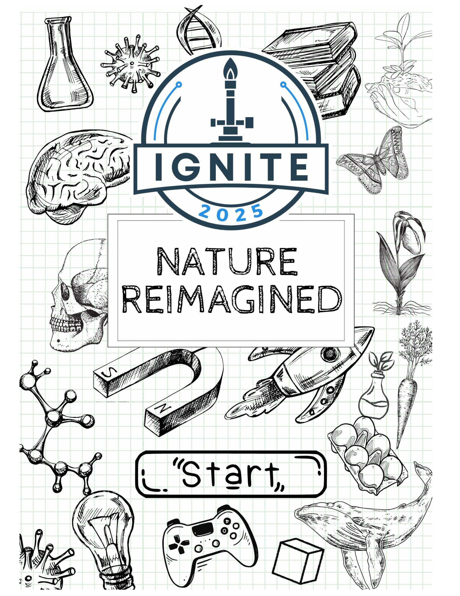

- 🏆 Overview
- 🎮 Video Game Design
- 🖌️ Logo Design
- 🖼️ 3D Printing Sculpture
- 🚗 Rover Maze
- 🌪️ Problem Solving
Overview

At the Ignite STEAM Competition, students from several schools compete in Science, Technology, Engineering, Art, and Math (STEAM) challenges.
Mark your calendars: The event is held at Verizon’s Headquarters in the spring, usually one day from morning to early afternoon. Ask your teacher for this year’s date and times.
The tabs above have the rules and the scoring rubric for each challenge.
Who can participate? Each school can send up to two students per event, so talk to your teacher and find a teammate, or enter as a solo competitor.
Video Game Design Challenge: Ecosystem Adventure
Overview: Middle school students are tasked with designing a video game that revolves around ecosystems. The game must have three distinct levels, each representing a different ecosystem (e.g., forest, ocean, desert, rainforest, etc.). The objective is to create a fun, educational game where the player solves an environmental problem in each ecosystem.
Key Requirements:
- Theme: Ecosystem-based with three unique levels.
- Problem-solving: Address environmental challenges in each level.
- Platform: Students can use any game design platform (e.g., Scratch, Unity, Roblox).
| Category | Criteria | Points |
|---|---|---|
| Creativity | Game shows originality in concept, story, and design. Incorporates a unique approach to ecosystems. | 10 |
| Theme Relevance | Each level accurately reflects a different ecosystem with a clear environmental problem to solve. | 15 |
| Problem-Solving | Clear environmental problems are introduced, and the player is required to solve them in each level. | 15 |
| Gameplay Mechanics | Game is functional, easy to navigate, and offers an appropriate level of challenge for the target age group. | 10 |
| Educational Value | The game effectively teaches players about ecosystems and environmental challenges. | 15 |
| Level Design | Each level is well-constructed, offering a visually distinct and engaging experience. | 10 |
| User Interface (UI) | Game interface is intuitive and user-friendly. | 10 |
| Presentation | Overall game presentation, including graphics, sound, and any written content, is cohesive and appealing. | 10 |
| Total Points | 100 | |
Logo Design Challenge
Overview: Students will design a 3D logo for one of three fictitious companies using GloForge. This challenge encourages branding, creativity, and design while considering the company's mission and values.
Options:
- Lone Star Canyon State Park: Preserving the beauty of Texas Hill Country.
- Roots & Harvest: Celebrating local food and sustainability.
- Gulf Coast Marine Rescue: Ocean animal rescue and rehabilitation.
| Category | Criteria | Points |
|---|---|---|
| Creativity & Originality | Logo demonstrates an innovative and original design approach, incorporating creative use of shapes and elements. | 15 |
| Theme & Mission Alignment | Logo clearly reflects the chosen company’s mission, values, and identity. | 20 |
| 3D Design Execution | Effective use of 3D design principles with clean and accurate detailing. | 15 |
| Symbolism & Meaning | Incorporates symbols or visuals that meaningfully represent the company’s work and goals. | 15 |
| Technical Precision | Well-executed technical details using GloForge, showing clean lines and smooth execution. | 10 |
| Aesthetic Appeal | Visually appealing logo with balance, color, and composition appropriate for the company. | 10 |
| Functionality | Logo is versatile and functional for use in various formats (print, digital, signage, etc.). | 10 |
| Total Points | 100 | |
3D Printing Mini-Sculpture Challenge: Elements of Nature
Overview: Students will create a 3D-printed mini-sculpture inspired by native Texas flora and fauna. The sculpture should capture the beauty of Texas' plant and animal life.
Key Guidelines:
- Theme: Native Texas flora and fauna.
- Size Restriction: Must fit within an 8-inch cube.
- Primary Medium: 3D-printed filament, with optional post-print enhancements.
| Category | Criteria | Points |
|---|---|---|
| Creativity & Originality | The sculpture demonstrates a unique and creative interpretation of the chosen Texas flora or fauna. | 15 |
| Relevance to Theme | The sculpture accurately represents native Texas flora and/or fauna, showcasing key details and characteristics. | 20 |
| 3D Printing Precision | The 3D print is clean and precise, with attention to detail and technical quality. | 20 |
| Post-Printing Alteration | Effective use of additional materials or techniques to enhance the printed sculpture (if applicable). | 15 |
| Aesthetic Appeal | The sculpture is visually appealing, with a harmonious and well-proportioned design. | 10 |
| Use of Technology | Demonstrates proficient use of 3D printing technology and filament to achieve the design. | 10 |
| Size Compliance | Sculpture adheres to the size restriction (no larger than 8 inches cubed). | 10 |
| Total Points | 100 | |
Rover Maze Challenge: A Drive Through Nature
Overview: Participants will code a Sphero RVR to navigate a nature-themed pathway filled with obstacles that require specific coding strategies to avoid.
Pathway Details:
- Size: 9x12 canvas with various turns and width changes.
- Theme: A pathway through natural obstacles.
- Goal: Complete the path while minimizing mistakes.
| Category | Criteria | Points |
|---|---|---|
| Distance Covered | Points awarded for each checkpoint passed (indicated by a red strip of tape). | 30 |
| Teamwork | Points based on the efficiency and intelligence of the navigation method. | 10 |
| Time | Points awarded only if the pathway is completed. No points for unfinished pathways. | 10 |
| Obstacle Navigation | Points awarded based on how well participants navigate specific obstacles. | 30 |
| Line Penalties | Points deducted based on the number of line penalties incurred by crossing the boundaries of the pathway. | -20 |
| Total Points | 100 | |
Problem Solving Competition: "Weather the Storm"
Overview: In this challenge, students will explore the effects of hurricanes on specific locations and propose solutions to mitigate erosion and weathering’s impact on a bridge and a home. The competition will include a simulation using a stream table.
Key Guidelines:
- Theme: "Weather the Storm" - Mitigating erosion caused by hurricanes.
- Simulation: Construct a bridge and home on a stream table.
- Presentation: Research findings and video demonstration.
| Category | Criteria | Points |
|---|---|---|
| Research Information | Detailed knowledge of topography, geography, and the pre- and post-hurricane environment for the selected location. | 30 |
| Presentation Quality | The presentation is engaging, clear, and easy to understand. | 10 |
| Bridge Stability | The bridge remains standing and undamaged during the stream table simulation. | 20 |
| Home Stability | The home remains standing after the stream simulation. | 20 |
| Solution Effectiveness | Effectiveness of the proposed solution to combat erosion and weathering on bridges and homes. | 20 |
| Total Points | 100 | |